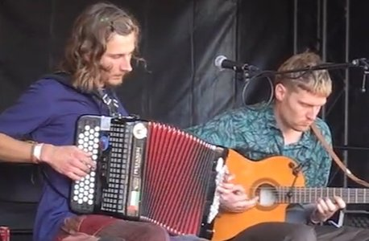

Heb jij zin om op een vrijere manier samen muziek te spelen met anderen, een keer iets anders dan een orkest of een bandje? Kom de frisse folkmuziek ontdekken in Utrecht!
Alle niveaus welkom. Maar het is aan te raden om al minstens 1 jaar te spelen.
Wanneer je wilt komen, meld je dan aan. Wanneer we een aanmelding hebben, gaan we ervan uit dat je komt. Wanneer het toch niet lukt, laat het dan even weten via folkmuziekutrecht@gmail.com.
We zullen vooral Ierse tunes spelen, maar er is ook zeker ruimte voor andere stijlen volksmuziek. We staan open voor van alles.
Hoe werkt het?
Folkmuziek bestaat in basis uit “tunes”: melodieën die meerdere mensen kennen, en dan samen spelen. Om ervoor te zorgen dat je sowieso iets hebt om te spelen hebben we wat tunes voor je verzameld. Maar als je al bezig bent met volksmuziek en je neemt zelf wat tunes mee, heel erg leuk! Er is vast iemand die met je mee kan spelen. In principe spelen we de muziek zonder bladmuziek. Als die stap wat te groot voor je is, neem de bladmuziek de eerste keer gerust mee als dat je wat rust geeft. Maar het is veel leuker en interessanter om het zonder te doen, en we raden aan om het dus de volgende keer thuis te laten.
Er zijn instrumenten die melodieën spelen (tunes), en er zijn instrumenten die akkoorden spelen (gitaar, bouzouki, linkerhand van de accordeon). Omdat de akkoorden vaak ter plekke bedacht worden, kun je iets anders spelen dan de anderen, daarom is het vaak beter om 1 persoon te hebben die akkoorden speelt. Als de akkoorden ergens staan opgeschreven speelt iedereen hetzelfde, en dan werkt het dus wel om met meerdere mensen akkoorden te spelen.
Als iemand een tune begint te spelen, begint deze een set, 1 of meer tunes achter elkaar. Een tune speel je meestal 3 keer door, en dan gaat de leider van de set de volgende tune spelen. Als je de tune niet kent, speel dan niet mee, of speel heel zacht mee op de achtergrond, zodat de rest de muziek nog goed kan horen.
Moet ik iets voorbereiden?
Het is zeker een goed idee om alvast wat tunes te oefenen voordat je naar de sessie komt. Er zal niet veel tijd zijn om je de tunes aan te leren. Iemand kan je misschien wel even helpen, maar de focus ligt op samen spelen.
Hier hebben we een verzameling tunes neergezet!
Ik denk dat dit misschien nog te moeilijk voor me is..
Je kunt een tune altijd langzamer spelen. Inisheer is specifiek erg mooi als die langzaam gespeeld wordt. Als je dat onder de knie hebt kun je iemand anders bij de sessie vragen of die Inisheer langzaam voor je wil starten. Het is een sessie dus je hoeft het niet alleen te doen, we spelen allemaal mee!
Er staan ook akkoorden boven de melodieën, misschien kun je die wel al spelen? Als je geen akkoorden instrument hebt, dan kun je ook nog kijken of je de toon van het akkoord kunt spelen, dus voor een D een D toon, voor een Em een E toon.
En als je toch een tune tegenkomt bij de sessie die je niet kent, kun je altijd de toon aanhouden van de toonsoort waar de tune in staat. Dus bij The Kesh [G] kun je een G spelen, en daar kun je dan ook vanuit experimenteren met ritme en andere tonen.
Als je er toch niet helemaal uitkomt kun je ons mailen op folkmuziekutrecht@gmail.com.
De eerste tune is ook echt de moeilijkste. Het is echt niet makkelijk om je eerste tune te leren. Die leren is een echte prestatie die best wat erkenning verdient. Als je Inisheer eenmaal hebt, ben ik ervan overtuigd dat je Egan's Polka kunt leren. Als je die hebt, ken je al 2 tunes! Dan heb je het tunes-leren wel al echt onder de knie.
Wat als ik al meer ervaring heb?
Wanneer je meer ervaren bent, ben je ook zeker welkom. We denken dat het juist interessant is om een mix te hebben van niveaus, zo leren we ook van elkaar. En sommige tunes zullen rustig gespeeld worden, zodat iedereen mee kan doen, en af en toe zullen er vooral ervaren spelers spelen, bij onbekendere of snellere tunes. En dat beide kunnen gebeuren, vinden wij juist leuk!
Zal ik mijn elektrische gitaar meenemen?
Deze folksessie is bedoeld voor akoestische instrumenten. Er zullen geen versterkers of microfoons aanwezig zijn.
Over ons
Hoi! Wij zijn Pieter en Boet. Folkmuziek is een heel sociale en gastvrije manier om samen muziek te maken, en het heeft ons veel plezier gebracht. Dat willen we graag delen met de mensen om ons heen.
We zijn allebei actief in de volksmuziek in Nederland. We spelen vaak samen en in verschillende bands, en doen optredens door het hele land. Pieter (gitaar) speelt in Odevare en heeft gestudeerd aan het Utrechts Conservatorium. Boet speelt bouzouki en accordeon in Celtic Constellation. Daarnaast hebben we ervaring in het geven van lessen. Maar we zoeken ook naar een andere, speelse manier om de muziek met anderen te delen. Dat je samen een beetje mag uitzoeken en ontdekken, en we denken dat een sessie daar de perfecte setting voor is.
Voorlopig doen we het met z'n tweeën, maar we zouden het graag zien groeien: meer sessies, op meer plekken, en meer mensen die deze muziek ontdekken, of je nu al jaren speelt of net begint.
Klinkt dat goed? Kom met ons spelen. En wil je helpen het te laten groeien, of heb je ideeën? Stuur ons een bericht op folkmuziekutrecht@gmail.com.
